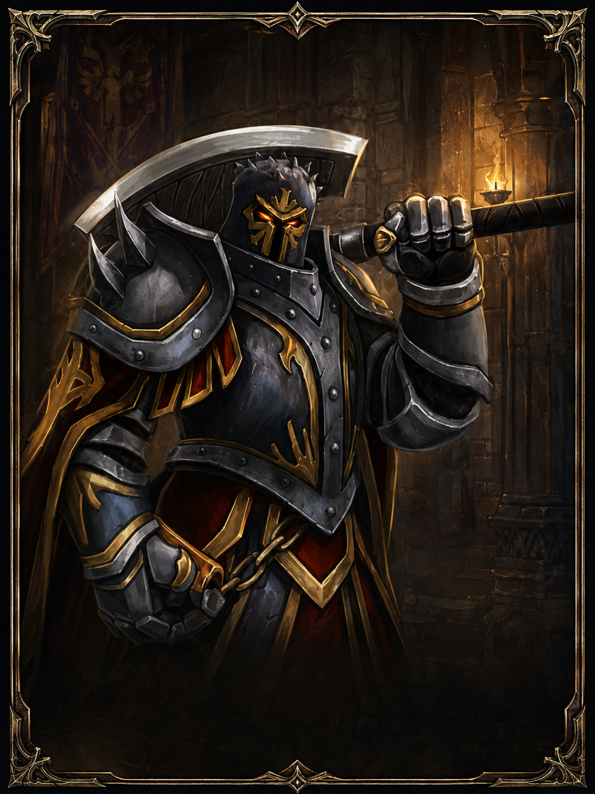

Yaratık Ganimeti
Normal yaratıklardan elde edilen temel ganimet türüdür.

Yaratık Avcıları itibarı, yaratıklardan düşen ganimetler, görev kaynakları ve özel boss ganimetleri üzerinden ilerleyen önemli itibar gruplarından biridir.
Yaratık Avcıları itibarı farklı ganimet türlerinin teslim değeriyle ilerler.
Normal yaratıklardan elde edilen temel ganimet türüdür.

Boss yaratıklardan elde edilen yüksek değerli ganimet türüdür.
Yaratık Avcıları için temel değer tablosu.
| Ganimet Türü | İtibar Değeri | Not |
|---|---|---|
| Normal Yaratık Ganimeti | 1 | En temel ganimet teslimidir. |
| Görev Ganimeti | 10 | Görev bağlantılı ganimetlerde kullanılır. |
| Boss Ganimeti | 50 | En yüksek değerli ganimet grubudur. |
Madalyon isimlerini sonradan değiştirebilmen için genel aşama adıyla bıraktım.

Başlangıç aralığı
Detay sonra eklenecek
Orta başlangıç
Detay sonra eklenecek
Orta seviye
Detay sonra eklenecek
İleri seviye
Detay sonra eklenecek
7. seviye sonrası
Görev ve kaynak isterMevcut itibar, hedef itibar ve ganimet değerine göre gereken adet miktarını hesapla.